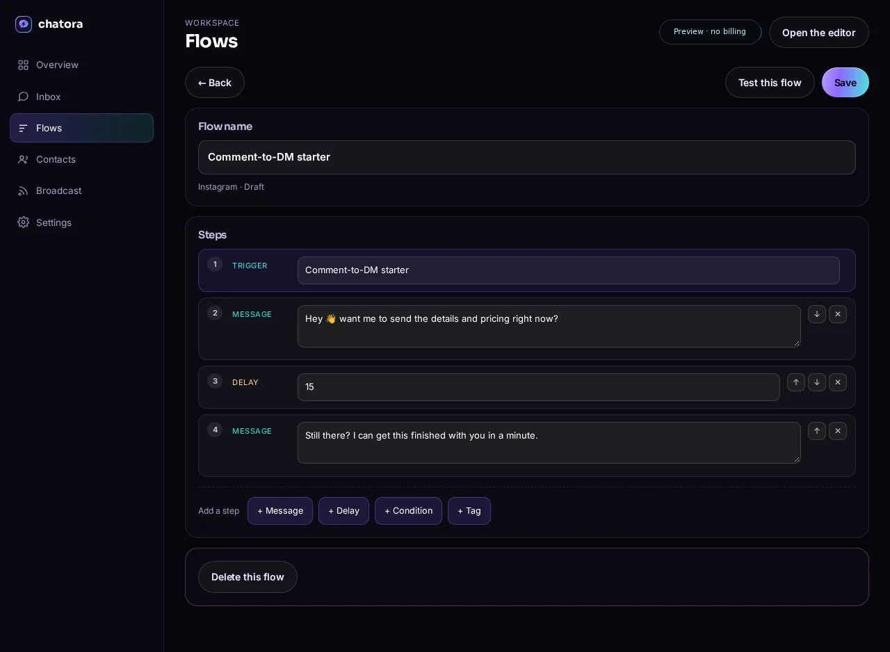

Fluxos de comentário para DM e de Stories. Ligue o Instagram com a sua própria app da Meta; aplica-se a revisão da Meta.
Automação de DMs completa
Leve seus clientes para o seu WhatsApp e Instagram oficiais
Comece grátis no Telegram, depois leve seus clientes para suas contas oficiais de WhatsApp e Instagram e automatize cada conversa. Preços em dólares. Veja os preços ou deixe que configuremos para você.
Pacotes com preço fixo
Os fluxos continuam como rascunhos
Interface em 6 idiomas
O Telegram, o chat web e os canais da Meta funcionam hoje; o resto está previsto
Instagram
WhatsApp
TikTok
Messenger
Telegram
SMS
Email
Web chat
Instagram
WhatsApp
TikTok
Messenger
Telegram
SMS
Email
Web chat
Dentro do produto
O espaço de trabalho disponível assim que você se cadastra
Cadastre-se para acessar um espaço de trabalho limpo, sem contatos ou conversas fictícias. Importe seus dados, adicione um fluxo como rascunho e conecte um canal oficial antes de qualquer envio.




- Contas reais do Supabase com cadastro por senha; provedores de login externo ainda não estão configurados
- Seus dados são isolados por usuário por meio da segurança em nível de linha
- Os dados do espaço de trabalho e os rascunhos de fluxos são salvos na sua conta; mensagens de saída não são registradas como enviadas
- Árabe e inglês, incluindo suporte a texto da direita para a esquerda
- As prévias de público de campanhas podem ser filtradas por etiqueta ou canal; o envio fica desativado até que um provedor seja conectado
5
tipos de canal que pode ligar
0
rascunho editável na galeria de modelos
0
contato de teste adicionado automaticamente
0
plano pago publicado pelo Chatora
Canais de mensagens
Onde seus compradores já estão
O Telegram, o chat web e os canais oficiais da Meta (API WhatsApp Cloud, Instagram, Messenger) podem ser ligados com as suas próprias contas. Os canais da Meta exigem a sua própria app da Meta e a respetiva revisão; o envio através de uma conta Meta real ainda está a ser verificado. TikTok, SMS e e-mail são ideias previstas.
Suporte com consentimento, catálogos e mensagens de encomendas. Use a API Cloud oficial com a sua própria app da Meta, ou o gateway OpenWA não oficial (risco de bloqueio).
TikTok
Ideia planejada: acompanhamento de comentários e informações de produtos. O TikTok não está conectado nesta prévia.
Messenger
Mensagens de Páginas do Facebook. Ligue o Messenger com a sua própria app da Meta; aplica-se a revisão da Meta.
Telegram
Fluxos para bots e comunidades. Ligue um bot do Telegram nas Definições.
SMS
Ideia planejada: acompanhamento por SMS com consentimento. Nenhum provedor de SMS está conectado; nenhuma taxa de abertura é afirmada.
Ideia planejada: acompanhamento por e-mail com consentimento. Nenhum provedor de e-mail está conectado nesta prévia.
Web chat
Mensagens no site. O widget de chat web funciona a partir das Definições.
São listados oito conceitos de canal. O Telegram, o chat web e os canais da Meta podem ser ligados hoje; o resto está previsto.
Etapas disponíveis na prévia
De um espaço vazio ao teste local de um rascunho
01
Criar um espaço de trabalho
Crie uma conta real para abrir um espaço de trabalho vazio. As conexões com provedores de canais ainda não estão configuradas.
02
Escolher um rascunho inicial
Escolha um esboço ilustrativo de fluxo de trabalho e edite as etapas do rascunho. Os modelos não foram testados em produção nem estão conectados.
03
Testar o rascunho localmente
Execute a simulação no navegador para revisar as etapas. Nenhum provedor está conectado e nenhuma mensagem é enviada.
Comparação datada de fornecedores
Compare preços publicados, não promessas
A página pública de preços da ManyChat para os EUA, consultada a 27 de outubro de 2026, indica Free com 25 contactos ativos e Essential/Pro/Business a 14/29/69 $ por mês faturados anualmente. A Chatora não tem preço de plano publicado, por isso não afirmamos qualquer poupança.
Deslize para comparar
| Preço / status | ManyChat · página pública dos EUA | |
|---|---|---|
| Preço da assinatura | Não publicado | Plano Free · 25 contatos ativos |
| Exemplos de planos anuais | Não publicado | Essential: US$ 14/mês (250 contatos) · Pro: US$ 29/mês (2.500) · Business: US$ 69/mês (7.500) |
| Mensagens em canais ao vivo | Nenhum fornecedor conectado; nenhuma mensagem enviada | Limites e canais variam por plano; consulte a página oficial |
| Tarifas de WhatsApp no Egito | Sem conexão do WhatsApp ou tarifa configurada | US$ 0,0740 marketing · 0,0041 utilidade · 0,0036 serviço |
Estes são preços de fornecedores em USD, não preços do Chatora. Os preços do ManyChat podem variar por região, período de cobrança, impostos e uso; as tarifas de WhatsApp no Egito listadas pelo ManyChat valem desde 1º de outubro de 2026.
Leia a comparação datada e as fontes
Página de preços do ManyChat · Guia de preços de WhatsApp do ManyChat
Fatos da prévia atual
Veja por conta própria o estado do produto
A Chatora ainda não tem testemunhos de clientes. Pode ver os rascunhos editáveis, a simulação local de fluxos e as ferramentas CSV de contactos sem tomar os exemplos como resultados.
A galeria tem 45 rascunhos iniciais editáveis. Ao escolher um, você cria um rascunho; nenhum canal é conectado e nenhuma mensagem é enviada.Ver rascunhos iniciais
A Chatora não publicou preços de subscrição. A comparação usa fontes de fornecedores datadas, não preços da Chatora.Ver comparação
Confira os rascunhos e as notas de preços datadas. Esta prévia não oferece ferramenta nem serviço de migração do ManyChat.Ver modelos
Status atual dos preços
O Chatora ainda não publicou planos pagos
O Chatora ainda não oferece preço de assinatura, cobrança nem pagamento. A conta abre uma prévia do produto, não um plano gratuito. Veja capturas datadas dos fornecedores na página de preços.
Nenhum plano pago publicado
Explore rascunhos de fluxos editáveis, ferramentas CSV de contactos e pré-visualizações de público. É possível ligar o Telegram, o chat web e os canais da Meta; a faturação não está ativada.
Abrir prévia do produto Ver capturas datadas dos preços dos fornecedores
Explore a prévia
Explore rascunhos e simulações locais
Confira rascunhos iniciais, teste uma simulação local e veja ideias ilustrativas de fluxos — sem tratá-las como integrações ativas.
45 rascunhos iniciais editáveis
Esboços ilustrativos para comentários, recuperação de carrinho, agendamentos e suporte. Escolher um cria um rascunho; ele não foi testado em produção nem conectado.
Ver modelosTeste uma simulação local
Carregue um exemplo, revise as etapas e execute uma simulação no navegador. Ela não conecta fornecedores, usa dados de clientes nem envia mensagens.
Abrir o editorIdeias de fluxo por tipo de negócio
Ideias ilustrativas para lojas, criadores, agências e clínicas — não são estudos de caso nem resultados medidos.
Ver casos de uso
FAQ
Perguntas, respostas honestas
O Chatora ainda não publicou preços de assinatura, então não é possível calcular a economia. A comparação mostra preços públicos do ManyChat com data; confirme preços regionais, cobrança e impostos com o ManyChat.
A Chatora pode ligar o Instagram através da API oficial da Meta com a sua própria app da Meta e a respetiva revisão. Siga as políticas atuais da plataforma; não é dada qualquer garantia de segurança da conta.
Não para explorar os rascunhos, as ferramentas CSV e a simulação local. Uma API REST pública com chaves de escopo limitado, webhooks de saída e um endpoint MCP já estão disponíveis; a criação de fluxos por IA não está disponível nesta prévia.
O Chatora ainda não publicou limites de planos por contatos nem regras de cobrança. A prévia não inclui assinatura; consulte a página de preços para ver o status atual.
A interface do site e do espaço de trabalho está disponível em árabe e inglês. As respostas de IA são limitadas e a sua exatidão não é garantida; não se afirma adaptação de dialetos.
Não há ferramenta nem serviço de migração do ManyChat. Você pode consultar os rascunhos editáveis e adaptá-los manualmente.
A Chatora não anunciou planos de subscrição gratuitos ou pagos. A faturação e o pagamento não estão ativados; criar um espaço de trabalho não é uma subscrição gratuita publicada.
Fale com o Chatora pela página de contato. Não garantimos prazo de resposta, disponibilidade 24/7 nem suporte dedicado.
Prévia do produto · cobrança desativada
Planeje sua próxima conversa com um cliente.
Crie fluxos, uma caixa de entrada e contactos. O Telegram, o chat web e os canais oficiais da Meta (API WhatsApp Cloud, Instagram, Messenger) podem ser ligados com as suas próprias contas. Não é publicado nenhum plano pago nem preço de subscrição.
✓ Nenhum plano de assinatura publicado
✓ Cobrança e pagamento não ativados
✓ Telegram, chat web e canais da Meta